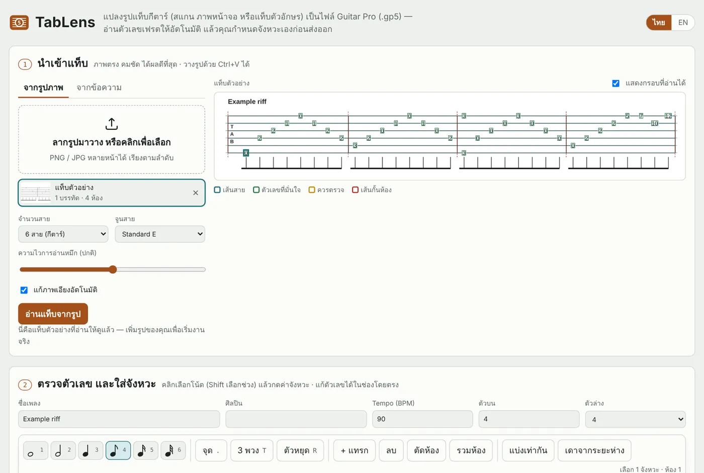

un4ckn0wl3z.github.io/TabLens

อ่านแท็บ
TabLens
แปลงรูปแท็บกีตาร์เป็นไฟล์ Guitar Pro 5
รูปสแกน · ภาพหน้าจอ · แท็บตัวอักษร → .gp5
- อ่านเลขเฟร็ตและเส้นกั้นห้องจากรูป หมุนรูปที่เอียงให้ตรงเอง ตัวเลขที่ไม่มั่นใจมีไฮไลต์ให้ตรวจ
- ใส่จังหวะ และเทคนิค bend, slide, hammer-on, palm mute, harmonic ได้ในตัว
- ฟังตัวอย่างก่อนส่งออก ไฟล์เปิดได้ใน Guitar Pro 5–8, TuxGuitar และ MuseScore
- ทำงานในเบราว์เซอร์ ไม่ส่งรูปออกไปไหน